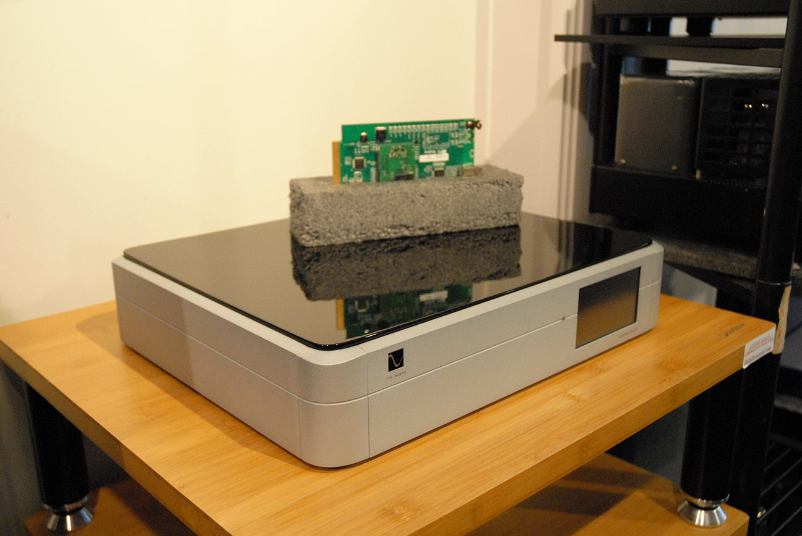
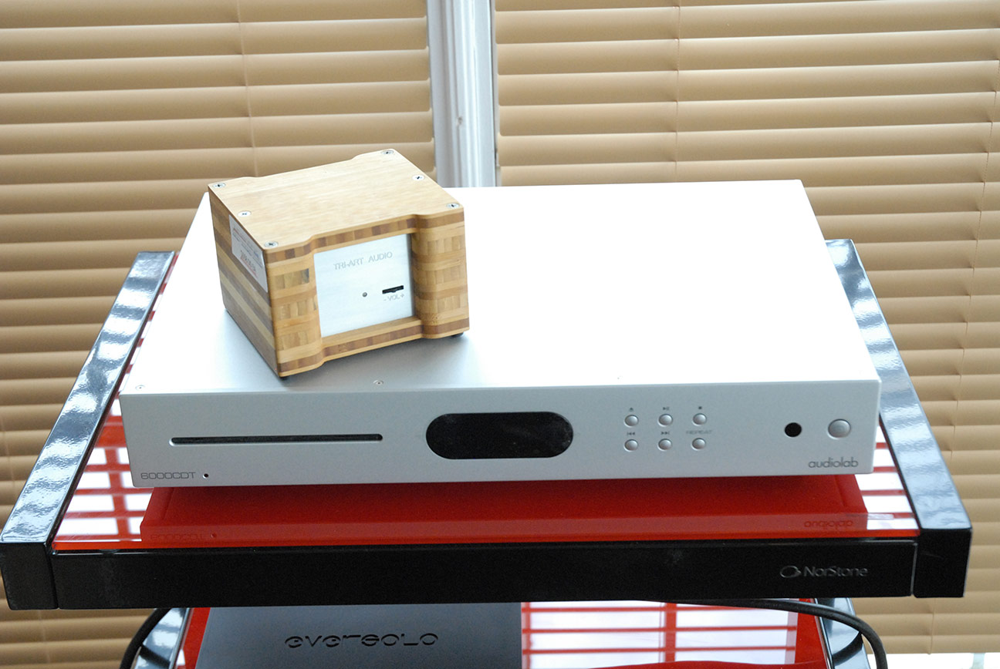

Brand New
PS Audio DirectStream DAC MK2
FPGA BASED
BALANCED
I2S
MSRP
$7,999
A better DAC reveals more from streamers, computers and CD transports alike.

A digital-to-analogue converter (DAC) turns the digital signal from a streamer, computer, or CD transport into the analogue waveform your amplifier needs — and a dedicated outboard DAC does it with far lower noise and jitter than a built-in chip. Our Ottawa selection spans the $1,850 Tri-Art Audio B-Series DAC to the FPGA-based $7,999 PS Audio DirectStream DAC MK2.
Add a standalone DAC when you want the biggest single upgrade to an existing streamer or CD transport. Choose a tube output stage for analogue warmth, or an ES9038PRO/FPGA design for precision.
| Model | Highlights | Condition | MSRP (CAD) |
|---|---|---|---|
| Tri-Art Audio B-Series DAC | Bamboo chassis, tube stage, USB | Brand New | $1,850 |
| Audiolab 9000DAC | ES9038PRO, MQA, Bluetooth | Display Model | $2,499 |
| PS Audio DirectStream DAC MK2 | FPGA-based, balanced, I²S | Brand New | $7,999 |
Advanced clocking and isolation reduce jitter for a more natural, fatigue-free presentation.
Connect your TV, CD transport, and computer simultaneously acting as a digital hub.
High-resolution USB inputs capable of handling DSD and ultra-high bitrate PCM files.
Choose output stages that match your system's synergy, from analytical precision to analog warmth.


Expert guidance on bringing digital audio into your system.
A Digital-to-Analogue Converter takes the digital 1s and 0s from a source (like a computer, CD transport, or streamer) and translates them into an analog signal that your amplifier and speakers can understand. Every digital audio device has one built-in, but dedicated outboard DACs do it much better.
If you want to extract the maximum fidelity from your digital music library or streaming services, a dedicated DAC is often the most significant upgrade you can make to a digital source. It provides lower noise, better timing (less jitter), and more accurate conversion than built-in chips.
USB is typically used for connecting computers and can handle the highest resolutions (including DSD). Coaxial (RCA/BNC) is common for CD transports and streamers, offering excellent timing. Optical (Toslink) provides electrical isolation but is often limited to 24-bit/96kHz resolutions.
Built-in DACs in phones, laptops, and budget receivers share a noisy environment with other components and use inexpensive chipsets. A dedicated outboard DAC has its own robust power supply, premium components, and sophisticated clocking circuits, resulting in a cleaner, more spacious sound.